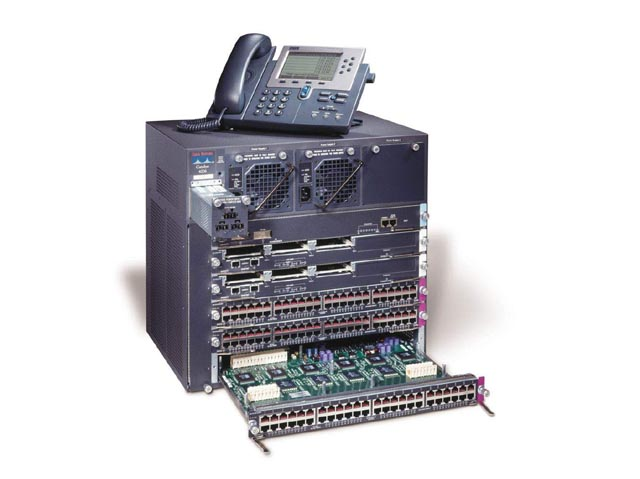

语音交换机
|  | 产品编号：ATY-4-1 产品价格： 产品品牌：： AVAYA、敏迪、阿尔卡特、西门子、NEC等 |
| 详细参数： 语音交换机也指用户交换机，电话交换机等。他是现代办公常用的电话通讯管理手段的一种，使电话管理者可集团性管理外线来电与内线呼出。 对于一些电话交换机，无法统一一个严格定义的分类。由于厂商、习惯、地区、产品定位等因素叫法不同。所以您也不用太刻意的去追寻，按照自己的使用要求去采购合适的设备就可以了。 用户交换机，也称为程控交换机，完成企业内部之间以及与公共电信网络的电话交换，并将电话，传真，调制解调器等功能合并。一般的术语是PBX。用户交换机就是处理分机之间的通话同时再通过主干线与公共交换电话网（PSTN）连接。 最初的时候，用户交换机的首要优势就是节约内部通话上的消费：处理系统内部的线路转换从而减少电话收费。当用户交换机逐渐流行起来后，新增加了一些功能，例如智能寻线,用户呼叫，拨打分机等，而这些是电话公司不提供的服务。 语音交换机按照品牌分有： AVAYA、敏迪、阿尔卡特、西门子、NEC等 我公司有专业技术团队负责承揽安装、维护语音交换机工程。 |
|